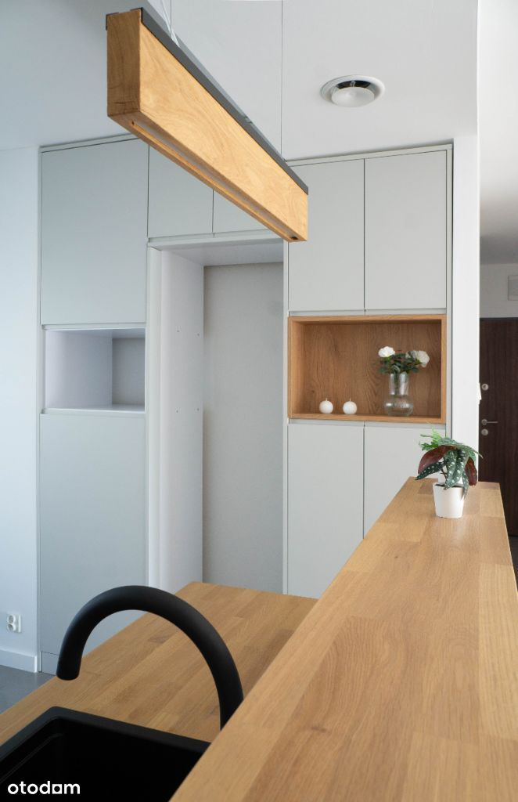
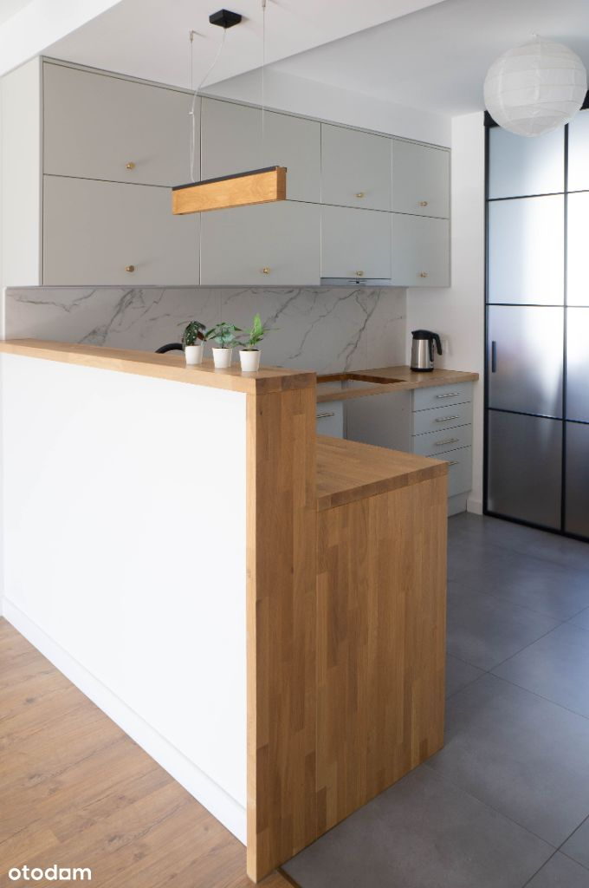
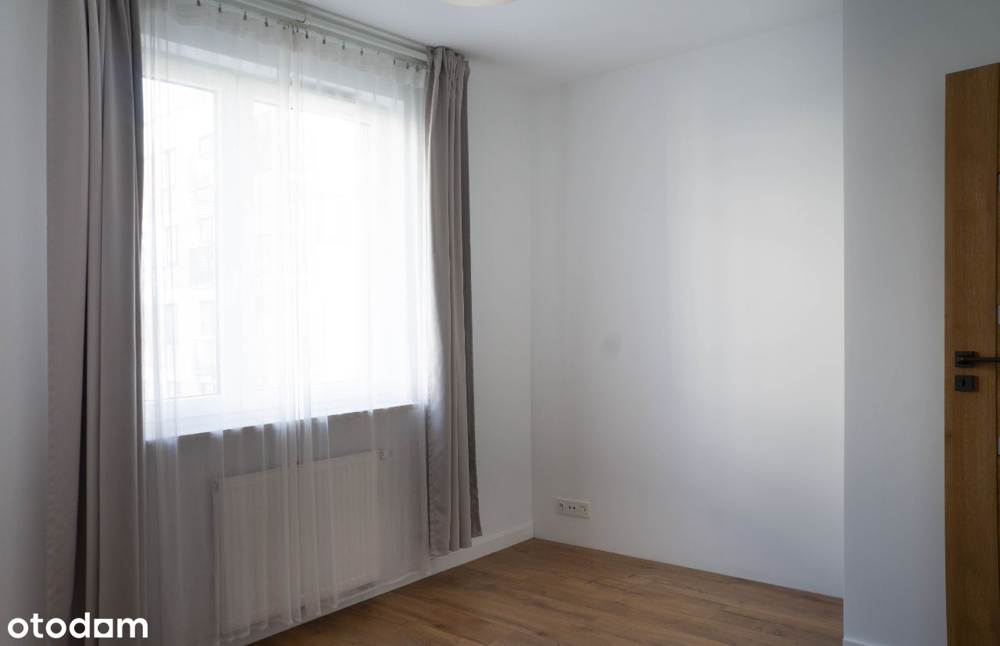
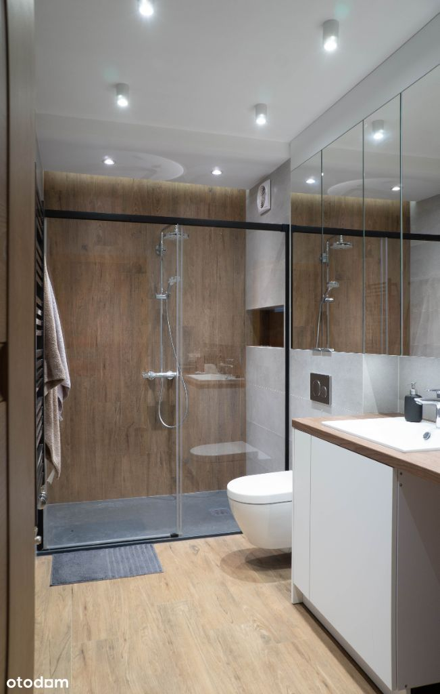
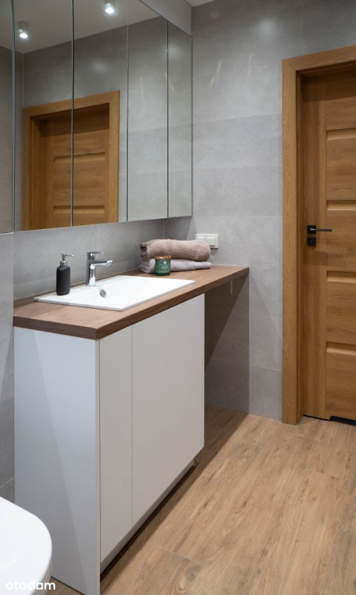
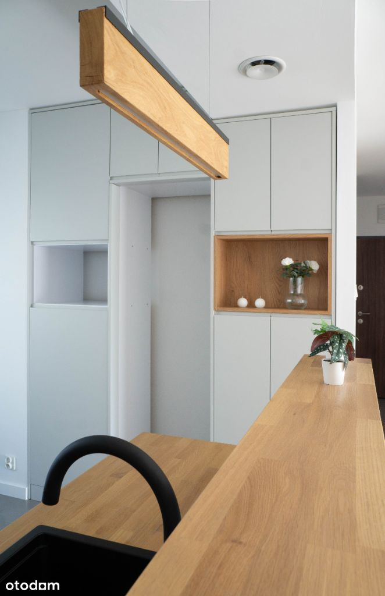
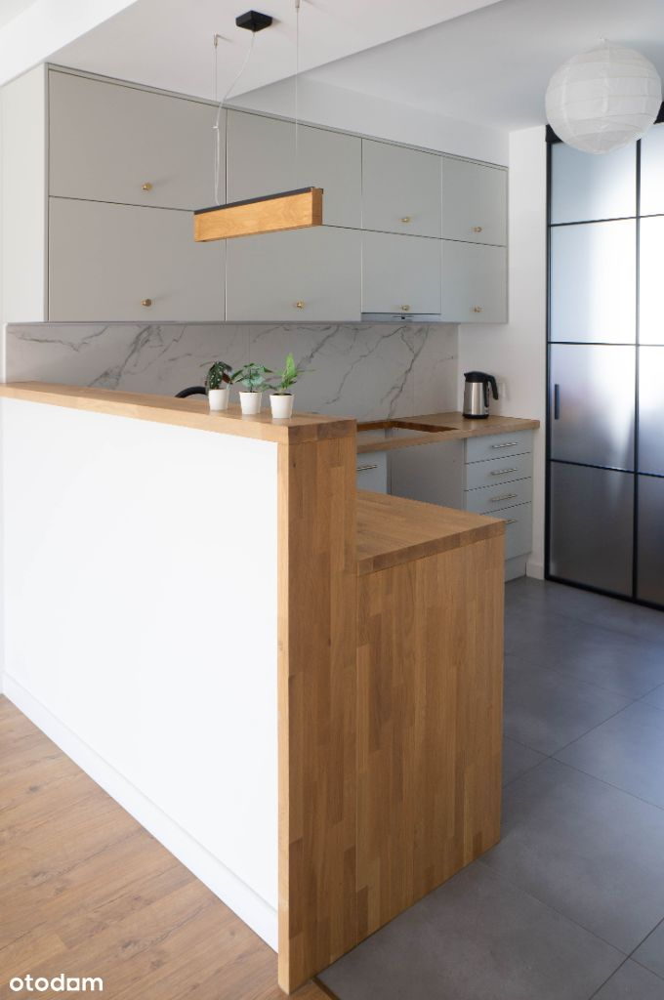
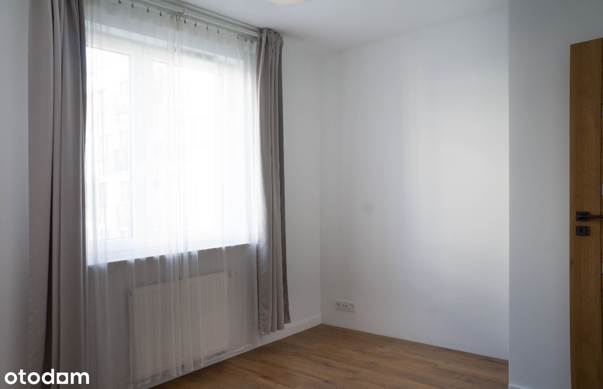
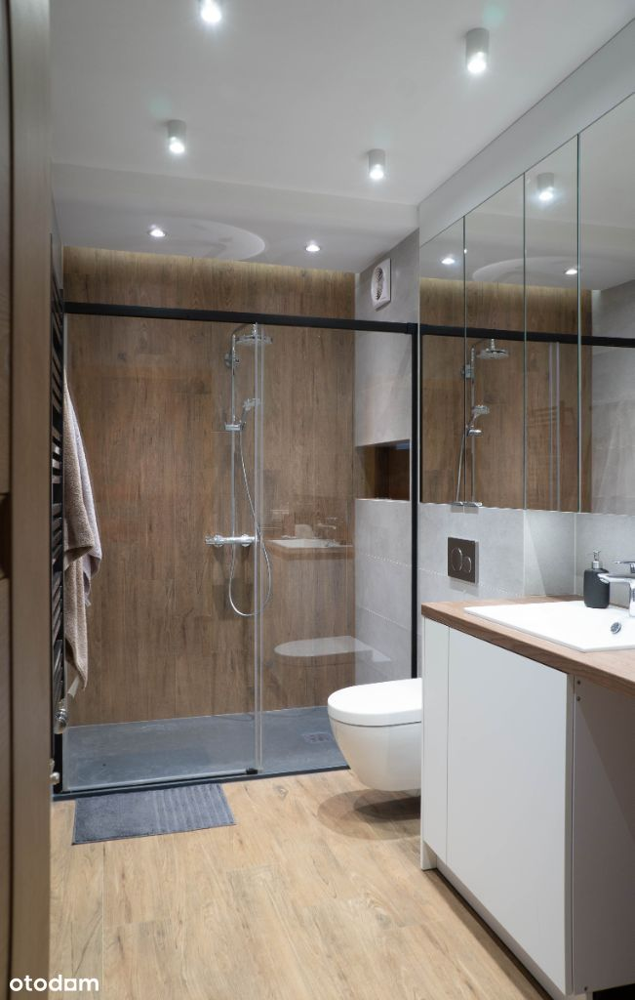
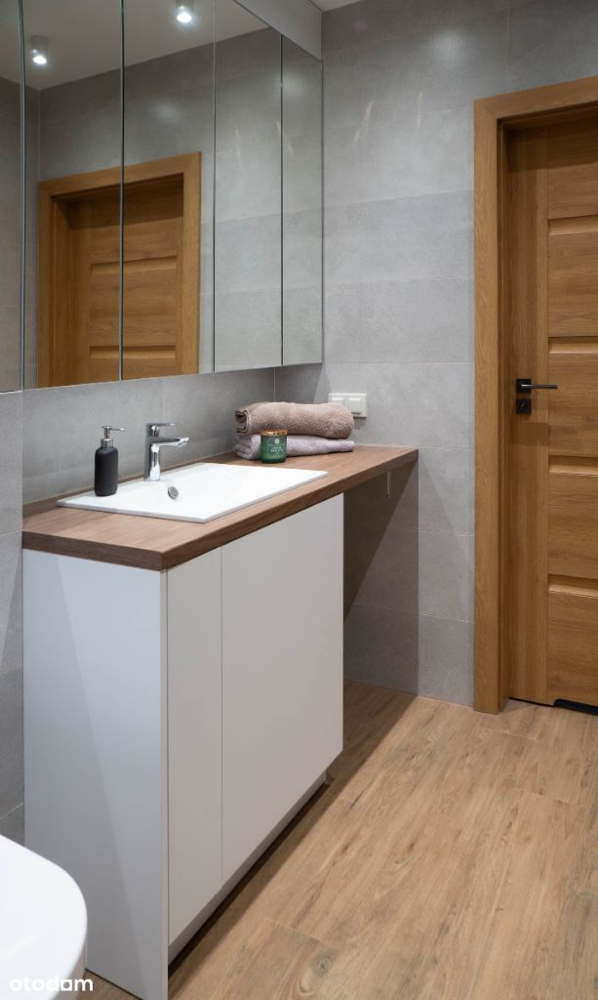

4 pokoje (z gabinetem) os. Wilno - bez pośredników
, Warszawa Elsnerów
1 250 000 PLN
79 m2
4 pokoje
1 piętro
Oferta dotyczy nowoczesnego mieszkania o powierzchni 79 m², usytuowanego na pierwszym piętrze w kameralnym budynku na warszawskim osiedlu Wilno. Zostało urządzone w wysokim standardzie, z użyciem najwyższej jakości materiałów. Odświeżone w 2023 roku, jest w stanie bardzo dobrym.
W skład mieszkania wchodzi:
- Salon połączony z jadalnią (19,87 m2),
- Kuchnia otwarta na salon (8,94 m2)
- Sypialnia 1 (10,8 m2)
- Sypialnia 2 (12,6 m2)
- Gabinet (5,03 m2)
- Łazienka (5,95 m2)
- WC (2,18 m2)
- Schowek (1,50 m2)
- Korytarz (1,50 m2)
- Loggia (8,82 m2)
- Przynależne miejsce postojowe w garażu podziemnym, blisko wejścia do klatki schodowej, dodatkowo płatne 45 000 zł.
Lokalizacja:
- Kameralne osiedle ze spójną, nowoczesną architekturą, pełne zieleni oraz z infrastrukturą dostosowaną do potrzeb mieszkańców. W jego obrębie znajdują się wszystkie potrzebne usługi, takie jak punkt pocztowy, apteka, sklepy spożywcze, placówki medyczne, salony kosmetyczne, restauracje, żłobki, przedszkola.
- W okolicy wiele zielonych terenów, m. in Zalew Bardowskiego z terenami rekreacyjnymi oraz las na Utracie
- Bardzo dobre połączenie komunikacją miejską z innymi częściami miasta: 4 minuty pociągiem do stacji metra Dworzec Wileński, 15 minut do stacji metra Świętokrzyska
- Dla poruszających się samochodem - łatwy dostęp do centrum miasta poprzez ul. Radzymińską, szybki wyjazd z Warszawy dzięki pobliskiej trasie S8
Atuty mieszkania:
- Nowoczesny, ponadczasowy design, pasujący do każdego stylu wykończenia
- Ekspozycja wschodnio - zachodnia; rano słońce świeci od strony sypialni, po południu od strony salonu
- Widok z okien na patio, osłonięta loggia zapewniająca prywatność, z dala od okien sąsiadów
- Wysoka jakość wykonania budynku oraz części wspólnych, udogodnienia w postaci windy, rowerowni, placu zabaw, parkingu podziemniego. Jest ogrodzony i monitorowany 24/7
- Idealny dla osób pracujących zdalnie z domu - posiada gabinet z miejscem na dwa biurka, oddzielony od reszty mieszkania nowoczesną szklaną ścianką
Standard wykończenia
Mieszkanie jest wykończone w wysokim standardzie, z wykorzystaniem materiałów takich jak:
- Panele podłogowe Quickstep o bardzo dobrej odporności na ścieranie, świetnie imitujące prawdziwe drewno, z podkładem wyciszającym; wodoodporne listwy przypodłogowe Arbiton Dora
- Wysokiej jakości meble w stałej zabudowie w kuchni, łazience i wc, z wykorzystaniem okuć firmy Blum, frontów lakierowanych oraz akrylowych, blatu z drewna klejonego;
- Solidne, metalowe regały w schowku
- Drzwi ramiakowe Porta z okleiną premium, zawiasami 3d oraz zamkami magnetycznymi
- Wyposażenie łazienkowe od renomowanych producentów (Villeroy & Boch, Kerramag, Kaldewei, Roca, Radaway, Geberit), pokryte powłokami ochronnymi zapobiegającymi zabrudzeniom
- Wysokiej jakości armatura - baterie Hansgrohe, zawory kątowe firmy Schell z regulacją i filtrami
- Nowoczesne grzejniki łazienkowe Instalprojekt
- Płytki z fugami plamoodpornymi Kerakoll Fugalite
- Oświetlenie dekoracyjne w łazience listwami LED z regulowaną temperaturą światła
- W obydwu łazienkach wentylacja mechaniczna, uruchamiana automatycznie lub za pomocą czujnika wilgotności
- Salon dostosowany do profesjonalnego sprzętu audio, dodatkowe wyprowadzenie gniazdka na tylne głośniki surround
- Nowoczesna, industrialna szklana ścianka przesuwna służąca jako oddzielenie gabinetu od strefy dziennej
- Kabel światłowodowy poprowadzony bezpośrednio do schowka i gabinetu
- Wideodomofon, drzwi antywłamianiowe
- Na balkonie donice drewniane wykonane na wymiar.
AGENCJOM NIERUCHOMOŚCI ORAZ POŚREDNIKOM DZIĘKUJEMY.
 
